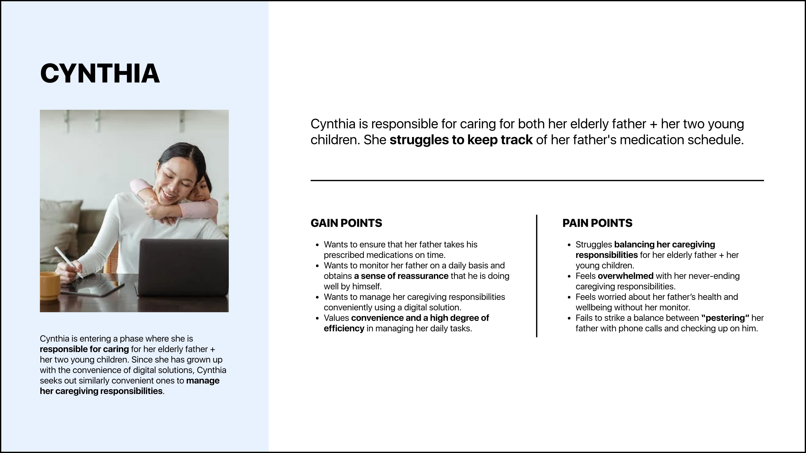
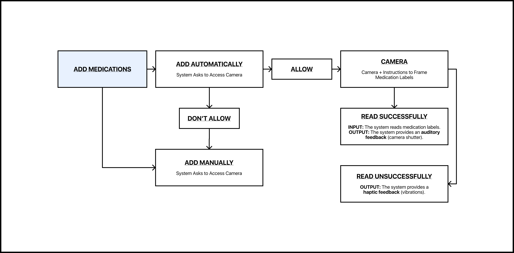
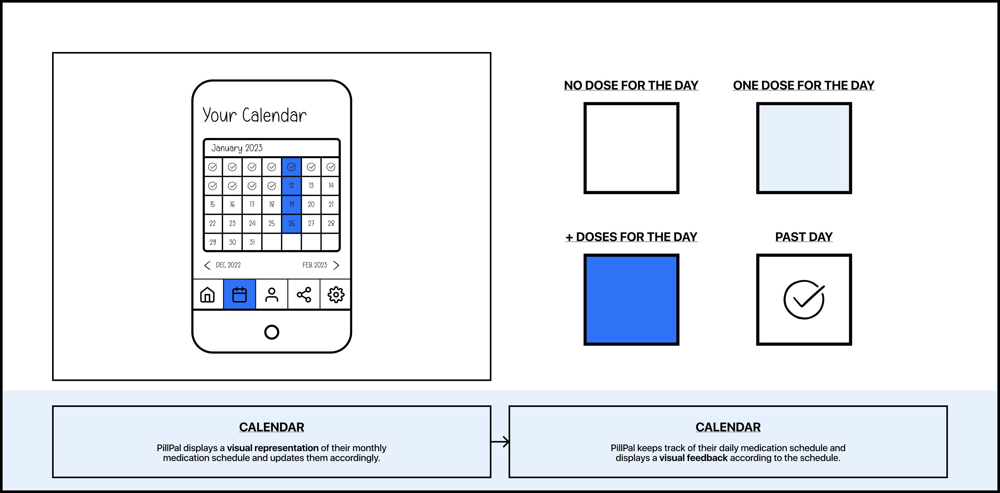
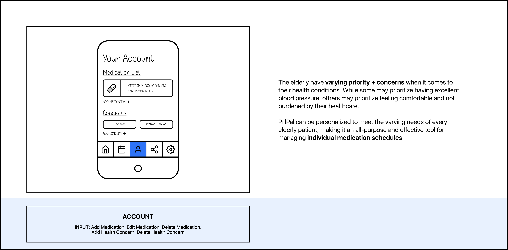
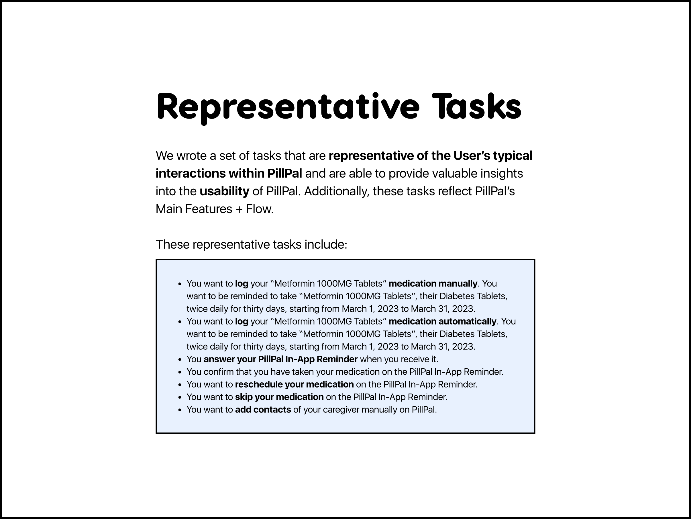
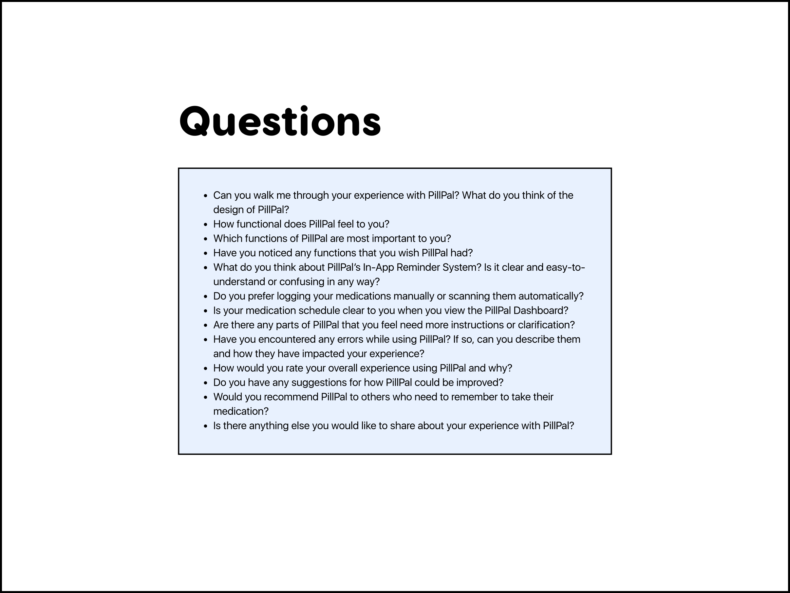

I. Defining Our Design Domain
Our Design Domain is mobile applications for elderly healthcare.
After conducting initial research on healthcare applications, we have uncovered the following three insights:
— Healthcare applications are becoming more popular and increasing in demand among the elderly, as older individuals are becoming increasingly adept at using technology and are showing more interest in technology-supported health services.
— Digital Natives are entering a phase where they are responsible for caring for their children and elderly parents. Since they have grown up with the convenience of services, such as Uber and TaskRabbit, they seek out similarly convenient digital solutions to manage their caregiving responsibilities.
— Healthcare professionals should strive to maintain the autonomy of their elderly patients. However, their autonomy is often compromised within healthcare settings. To promote autonomy, it is crucial to provide them and their caregivers with sufficient information to make informed decisions about their care.
II. Conducting Extensive Research On Our Target User
An elderly patient tends to accumulate multiple health issues that become more devastatingly difficult to follow when accumulated. As a result, they are often demanded to manage multiple medications to combat their multiple health issues.
PillPal is intended for elderly patients who struggle with medication adherence. PillPal is particularly useful for elderly patients who are demanded to manage multiple medications and have a complicated medication schedule that require frequent administration. Additionally, PillPal is intended for elderly patients who desire to maintain their autonomy.
Elderly Patient Persona
Caregiver Persona
III. Designing Our User Flow
We used User Flow to map out the steps of an elderly patient managing their pill management on PillPal.
By mapping out our User's journey through PillPal, we can identify any steps that are confusing or difficult to complete, and redesign them to be more friendly for them. User Flow also helped us to simplify processes and reduce the cognitive load on them.
Receiving Our In-App Reminder
Logging Medication
IV. Storyboarding
We used Storyboarding to depict the experiences of an elderly patient, such as Daryl, as they navigate PillPal. By creating a series of images that outline Daryl's interactions with PillPal and his caregiver, we can identify pain-points and areas where our application can improve Daryl's experience.
Daryl's Storyboard
Receiving Our In-App Reminder
Viewing Our Calendar
Sending A Notification
Viewing Our Medication List
V. Iterating Our Interface Design
Our team opted for a Timeline System, instead of our previous AM/PM Clock System, to prioritize practicality over aesthetics information visualization.
Since PillPal is heavily time-based, our team redesigned the display of their medication schedule into a linear timeline with a progress bar, progress check-points, and horizontal scrolling to show + hide more information on their medication schedule.
VI. Conducting User Study
Our team conducted 4 In-Person + 2 Remote “Think Aloud Testing”, followed by their Semi-Structured Interviews.
Our team performed In-Person Thinking Aloud Testing with 4 User Participants, 3 of which are elderly patients with certain medication condition(s) and 1 is a daughter monitoring the health of her parents. For our elderly patients, we recruited those who have been dealing with no support from their healthcare professional. Additionally, we recruited a daughter of one of our elderly patients to gain insights from the perspective of a caregiver.
Additionally, the team recruited 1 elderly patient with hypertension and 1 adult who monitors his own health. Since Remote Testing required them to download ProtoPie Player on their mobile device, the team recruited those who feel more comfortable setting up mobile applications.
"Think Aloud" Testing
Our team opted to conduct “Think Aloud Testing” with our User Participants. Our process of conducting “Think Aloud Testing” involves first and foremost writing a set of tasks that are representative of the User’s typical interactions within PillPal and are able to provide valuable insights into the usability of PillPal.
Semi-Structured Interviews
Our team opted to follow our “Think Aloud Testing” with Semi-Structured Interviews. “Think Aloud Testing” provided valuable data on how our User Participants interact within PillPal, but it did not explicitly reveal why they acted or thought in a certain way.
VII. Analyzing Our User Study
We analyzed our findings by Affinity Mapping. Initially, our team wrote each and every finding from our User Studies on a separate sticky note and spread them out on FigJam. We proceeded to look for affinities on them. After looking for similar themes, we grouped our sticky notes with a similar theme together. We then labeled our groupings with a title that best describes the theme.
By doing Affinity Mapping, our team were able to organize the information we have collected from our User Studies and pinpoint the most relevant issues to our User Participants.
VIII. Addressing Our Findings
In order to address these concerns, our team celebrated every milestone + congratulated them on every milestone through animated pop-ups and looked for a replacement for our “Remind Me Later” icon. We added more “Dosage” forms as a unit, such as tablets, capsules, and syrup and asked the User for the quantity of their medication prescribed to them, instead of the length of time of their medical use as well.
Find further information on how we tackled these concerns by reading more.
Read More